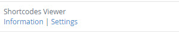
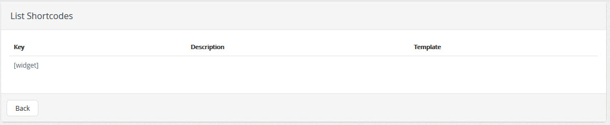

| Description |
|---|
| Shortcodes Plugin Viewer allows users to display all the shortcodes that exist within the system, these shortcodes can be copied and pasted within the content of a post. |
| Configuration | |
|---|---|
|  | After activating the plugin, select the link "Settings/Configuración" to edit the characteristics of the plugin |
|  |
Shortcodes Viewer, to view the list of shortcodes, system |